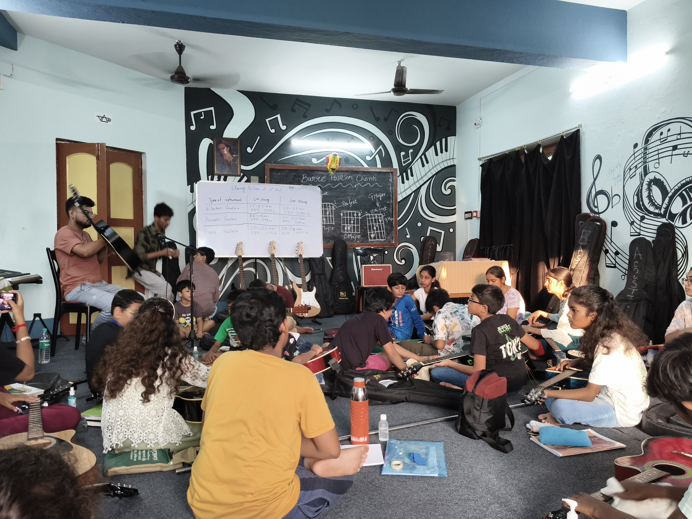
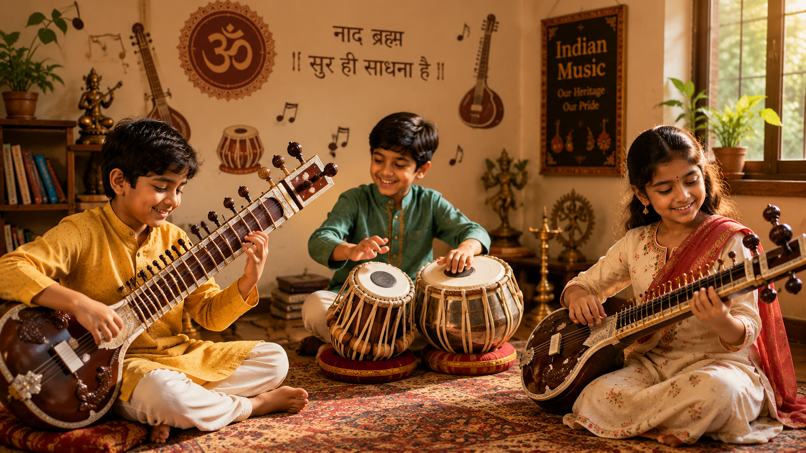
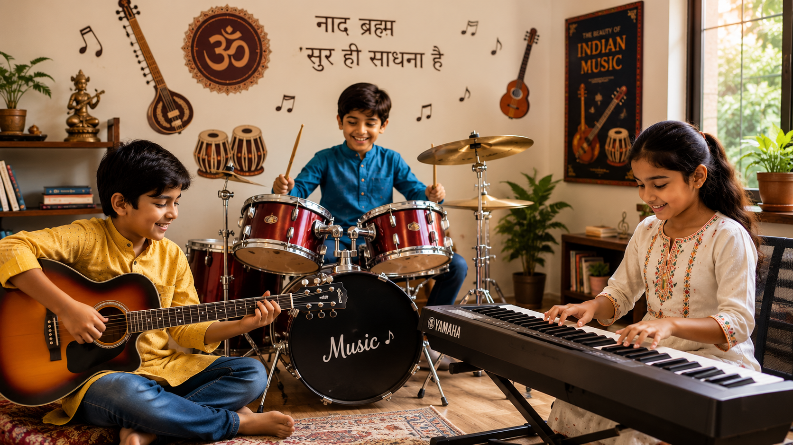
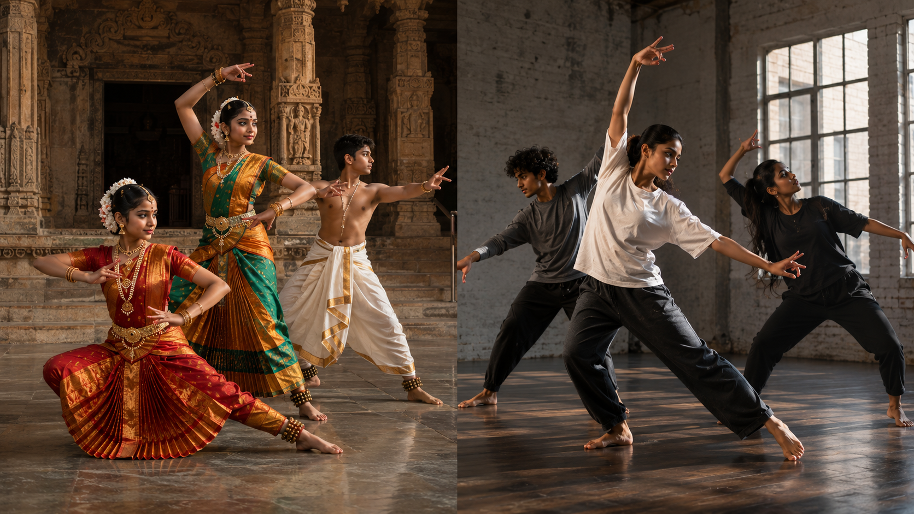
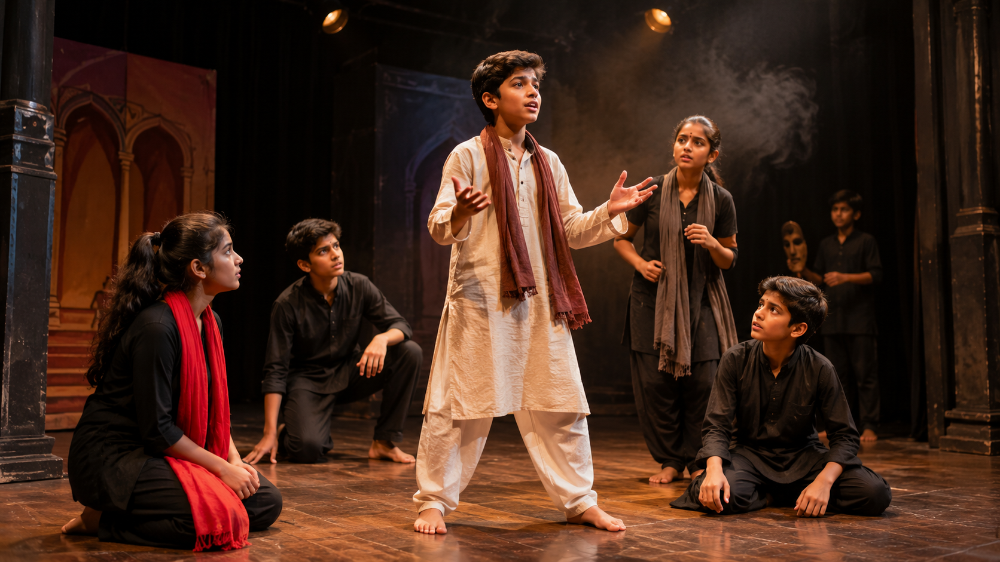

Where Sur Meets Sadhana
Preserving what came before us, giving room for what's new
Music isn't extra — it's part of growing up whole. At Aditi Sursadhanaloy, we believe every child has some music in them, waiting for a chance to come out. This isn't just a music school. It's a place where old traditions and new ideas share the same room — where discipline and joy aren't opposites, and where a child's culture becomes something they're proud of, not something left behind.
150+
Annual Learners
5+
Ways to Create
Guru-Shishya
Adapted Training Lineage
What We Believe
Holistic Growth
Music builds the whole child — mind, feelings, and how they get along with others.
Heritage
Teaching classical traditions keeps our heritage alive, and lets it keep growing.
Original Voice
We push technique, but we push original voice more.
Bonds
Making music together builds real bonds.
Expression & Healing
Creative expression heals — it gives feelings somewhere to go, and builds confidence.
Vocal Classes
The Human Voice, Trained Right
Classical roots, room to grow
The voice is the first instrument anyone ever has. At Aditi Sursadhanaloy, we train it seriously — rooted in Indian classical tradition, open to new styles.
We teach through the Guru-Shishya way — teacher and student, learning together, the way it's always been done here — just adapted for how students learn today.
Foundation First: Students start with the basics of the voice — breathing, tone, posture, projection. Get this right, and singing lasts a lifetime.
Classical Training: Training in Hindustani or Carnatic style (student's choice) — the precision, the feeling, and the room to improvise that's built into these traditions.

Indian Instrument Classes
Carrying Our Tradition Forward
Each Indian instrument carries generations of learning in it. At Aditi Sursadhanaloy, we teach two:
- Tabla — Rhythm cycles (Taals), stroke technique, oral notation
- Sitar — Raga structure, microtones (Meend), string tuning, technique

Western Instrument Classes
New Sounds, Same Discipline
Rooted in Indian classical training, but ready for more — our Western instrument classes help students play guitar, drums, and piano, and mix styles freely.
- Guitar — Acoustic & bass basics
- Drums — Rhythm and coordination
- Piano — Scales and sight-reading

Dance Classes
Movement as Expression
Dance came before words did. We teach both classical Indian forms and contemporary dance, because:
- It builds the body, the feelings, and the mind together
- Classical forms carry generations of craft
- Contemporary dance gives room for a student's own voice
- Performing changes how a young person sees themselves
- Dancing together builds real friendships

Theatre Classes
Telling the Story, Becoming the Character
Theatre is one of the oldest ways humans have told stories — where imagination gets real, and one person's story can speak for many. We train young actors and storytellers who use the stage to grow, not just to perform:
- Builds real confidence — Being on stage changes how you see yourself
- Builds empathy — Playing another person deepens how you understand people
- Gives room for real creativity and imagination
- Sharpens thinking — Understanding character and choice takes real work
- Builds community — Theatre only works as a team
- Tells stories that matter — Theatre can speak to real issues and real lives
